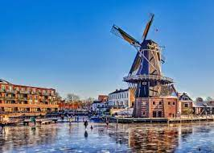
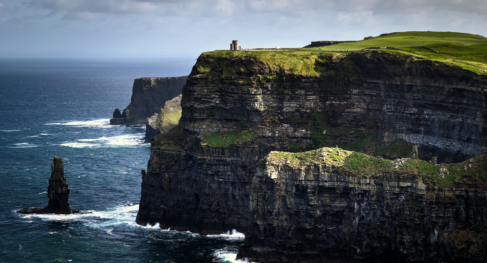
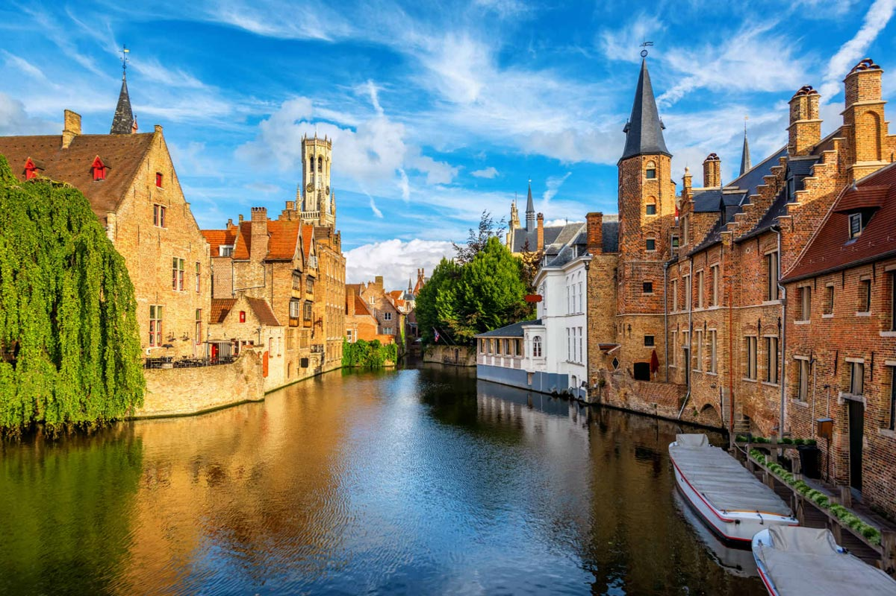
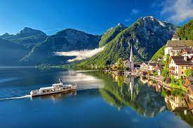
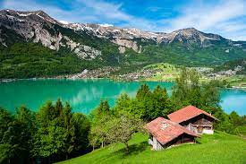
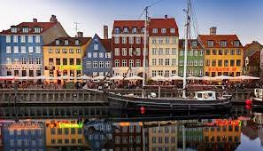
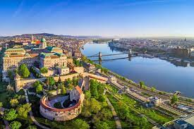
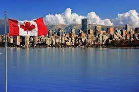

Holanda

La relevancia de Holanda dentro de la eurozona es incuestionable ya que representa la quinta economía del
área al sumar su PIB cerca de 700.000 millones de euros, lo cual implica un peso del 6,5% en la actividad
del agregado del euro que justifica su papel como uno de los grandes países dentro del organigrama del BCE.
Un hecho que dota de mayor relevancia a las próximas elecciones en el país, sobre todo, ante el auge de los
movimientos euroescépticos cuya máxima expresión fue el brexit.
Irlanda

Irlanda tiene uno de los ingresos por habitante más elevados del mundo. Su trayectoria hacia la prosperidad
no ha sido uniforme, lo que ha incluido altos y retrocesos. Sin embargo, tal vez su principal clave de éxito
ha consistido en el reconocimiento y corrección a fondo de sus errores.
Belgica

La moderna economía de mercado de Bélgica se beneficia de la privilegiada localización geográfica del país
en Europa, por una red de transportes bastante desarrollada y por una base industrial y comercial
diversificada.La industria está concentrada principalmente en la región de Flandes, al norte.
Con pocos recursos naturales, el país importa grandes cantidades de materias primas (MP) y exporta
principalmente manufacturados. El resultado es una economía muy dependiente de los mercados mundiales.
Austria

La economía de Austria está definida por ser una economía social de mercado, con empresas privadas y
públicas. Las actividades básicas se han nacionalizado tras el final de la Segunda Guerra Mundial. Austria
es uno de los países más prósperos y desarrollados de Europa. Así pues, Austria tiene una economía bien
desarrollada gracias a la gran vertebración de su mercado, vertebración reflejada en el alto nivel de vida
de sus habitantes.
Suiza

Suiza es el cuarto país más globalizado del mundo después de Bélgica, Austria y Suecia este 2008, afirma el
Instituto de Investigación Económica de Zúrich (KOF).
Con ello, Suiza gana dos sitios con respecto al 2007 y deja atrás a países como Dinamarca, Holanda, Reino
Unido, la República Checa, Francia, Finlandia, Alemania, España, Hungría, Portugal o Canadá (en ese orden).
Singapur
Con un territorio que lo hace uno de los países más pequeños del mundo y una población de menos de 6
millones de personas, Singapur es un ejemplo de desarrollo para el resto del planeta.
La pequeña isla del sureste asiático se ha destacado en la última década por convertirse en una nación rica,
bien educada, segura y protectora del medio ambiente.
Este año suma un reconocimiento más: es el país con la economía más competitiva del mundo.
Dinamarca

En realidad, Dinamarca basa su desarrollo en dos grandes pilares: el del libre comercio y el de la
innovación. Acompañados siempre por un uso racional del medioambiente. Fueron los daneses los primeros en
desarrollar un motor alimentado por energía eólica. En años recientes, sus empresas “verdes” son líderes a
nivel internacional y tienen una visión para el desarrollo de la economía ecológica de largo plazo. Su
visión va más allá de la conciencia ecológica, es su utilización para hacer rentable la protección del medio
ambiente. Para ello, han desarrollado nuevas tecnologías e invierten grandes cantidades de recursos
económicos y académicos en investigación y desarrollo vinculados a la economía sustentable.
Suecia

El Foro Económico Mundial publica anualmente un Índice de Competitividad Global y este año coloca a Suecia
en el sexto lugar. El crecimiento ha sido notable, con un 3,7% en 2016; además, el país ha logrado disminuir
significativamente su déficit en 2015, al saltar 30 lugares al puesto 22 en este indicador.
Hungria

Hungría, al entrar a la Unión Europea esperaba modernizar su agricultura, estabilizar su economía y
asegurarla en las crisis, modernizar y ampliar sus infraestructuras y recibir ayudas económicas para el
desarrollo de sus regiones. Así como otras economías de la Europa del Este, hizo una transición de una
economía centralizada y planificada a una economía de mercado en los años 1990. Hoy el sector privado
responde del 80% del Producto Interno Bruto del país Las inversiones y la posesión de empresas húngaras
por extranjeros acumulan más de 60 mil millones de dólares desde 1989. Las medidas de austeridad propuestas
por el FMI redujeron el déficit presupuestario de más del 9% en 2006 al 3,3% del PIB en 2008
Canada

El fenómeno de la globalización ha tenido notables efectos en Canadá a partir de la década de los 80's
particularmente; éstos han sido notorios principalmente en el proceso de integración del país a la economía
mundial a través de la firma de tratados comerciales con otros Estados o regiones del mundo; en el
desarrollo